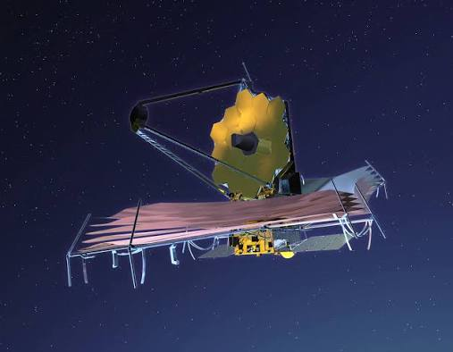

Tjugofem år av planering, tio miljarder dollar och oräkneliga timmar av ingenjörskonst. Rymdteleskopet James Webb (JWST) är mänsklighetens mest avancerade öga ut i rymden, och det har redan börjat skriva om historieböckerna.Teleskopet sköts upp på juldagen 2021 och befinner sig nu 1,5 miljoner kilometer från jorden. Dess huvuduppgift är att fånga ljuset från de allra första galaxerna som bildades efter Big Bang.
Vad gör teleskopet speciellt?

Infraröd syn: Till skillnad från föregångaren Hubble, som främst tittade på synligt ljus, är Webb designat för att se universum i infrarött. Detta gör att teleskopet kan se rakt igenom tjocka kosmiska dammoln där stjärnor och planeter föds. Solskölden: För att de värmekänsliga instrumenten ska fungera måste teleskopet hållas extremt kallt. Den fällbara solskölden, lika stor som en tennisplan, blockerar värmen från solen, jorden och månen.Spegeln: Huvudspegeln mäter 6,5 meter i diameter och består av 18 hexagonala guldpläterade segment. Den samlar in mer än sex gånger så mycket ljus som Hubbles spegel.
"James Webb kommer att förändra vår förståelse av universum, precis som Galileo gjorde när han för första gången riktade sitt teleskop mot stjärnhimlen." – Anonym astronom
Sidan är skapad för kursen Webbutveckling 2 av: Namn: Ola Ovesson Klass: TE24 Ålder: 18 Intressen: Fortkörning, sova, skruva, sladda,